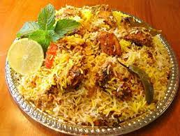
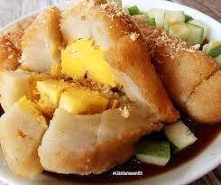

- Rendang
- Pempek

Rendang or randang is an authentic Indonesian meat dish originating from Minangkabau . This dish is produced from a long,
low temperature cooking process using a variety of spices and coconut milk . The cooking process took hours (usually around four hours)
until all that was left were the dark, black pieces of meat and bran. At room temperature, rendang can last for weeks. Rendang that is
cooked in a shorter time and the coconut milk hasn't dried up is called kalio, light golden brown in color. Rendang can be found in
Padang Restaurants around the world. This cuisine is popular in Indonesia and other Southeast Asian countries , such as Malaysia , Singapore
, Brunei , the Philippines and Thailand . In its home area, Minangkabau, rendang is served in various traditional ceremonies and special events.
Although rendang is a traditional Minangkabau dish , cooking techniques as well as the choice and use of rendang spices vary by region. In 2011,
rendang was named the dish that ranked first on CNN International 's list of the World's 50 Most Delicious Foods .In 2018, rendang was officially
designated as one of Indonesia's five national dishes.
In cooking seasoned meat in coconut milk sauce, when viewed from the liquid content of coconut milk , there are actually three stages,
from the wettest to the driest: curry -kalio-rendang. From this understanding true rendang is the rendang that has the lowest liquid content.
However, it is generally recognized that there are two types of rendang: dry and wet.
Dry rendang: Dry rendang is true rendang in the Minang cooking tradition. This rendang is cooked for hours until the coconut milk dries up and the spices
are completely absorbed. Dry rendang is served for special events, such as traditional ceremonies, festivals, or welcoming a guest of honor. Dry rendang is usually
darker in color, slightly blackish brown. If cooked properly, dry rendang can withstand being stored at room temperature for three to four weeks, and can even last
up to more than a month if stored in the refrigerator, and six months if frozen. Some have argued that the taste of the original Minang rendang is the most delicious
and there are no two — far different from rendang in a number of other Malay areas.
Wet rendang or Kalio: Wet rendang , or more accurately called kalio , is rendang that is cooked in a shorter time, the coconut milk is not completely dry, and at room temperature it can only
last for less than a week. The wet rendang is light golden brown and paler.

Pempek or empek-empek is a food made from finely ground fish meat mixed with starch or sago flour , as well as the composition of several other
ingredients such as eggs, mashed garlic, flavorings, and salt. Pempek is usually served with vinegar sauce which has a sour, sweet, and spicy taste.
Pempek is often referred to as a typical Palembang food , although almost all regions in South Sumatra produce it.Pempek can be found easily in
Palembang City; some sell it in restaurants, some are on the side of the road, and some are carried. In the 1980s, it was common for sellers to carry
a basket full of pempek while walking around selling their wares.
Pempek has existed in Palembang since the arrival of Chinese immigrants to Palembang, namely around the 16th century, when Sultan Mahmud Badaruddin II was in
power in the Palembang-Darussalam sultanate . Traditionally, the name empek-empek or pempek is believed to have originated from the term apek or pek-pek ,
which is the name for uncle or old Chinese man. Based on folklore, around 1617 a 65-year-old musty who lived in the Perakit area (on the banks of the Musi River )
was concerned about seeing the abundant catch of fish in the Musi River which had not been fully utilized, only fried and dipindang. He then tried other processing
alternatives. He mixes ground fish meat with tapioca flour, so that new food is produced. The new food is peddled by the musty by cycling around the city. Because
the seller was called "pek ... musty", the food came to be known as empek-empek or pempek. However, this folklore deserves further study, because some parts of this
story do not fit the historical chronology. For example, cassava as an ingredient in tapioca flour was only introduced by the Portuguese to Indonesia in the 16th century,
while the Chinese had inhabited Palembang at least since the Srivijaya era . In addition, the velocipede (bicycle) was only known in France and Germany in the 18th century.
Sultan Mahmud Badaruddin was only born in 1767. Even so, maybe pempek is an adaptation of processed Chinese fish food; such as fish balls, kekian or ngohiang . The origin
of pempek is from Palembang, but the history of the origin of this dish is unclear. Traditional fairy tales associate it with Chinese culinary influences. However,
some historians say that pempek may have originated from an ancient food called kelesan , a steamed food made from a mixture of sago dough and fish meat, and is thought to
have existed since the time of the Srivijaya kingdom in the VII century AD Sago flour is obtained from the stems of sago palm or palm trees .